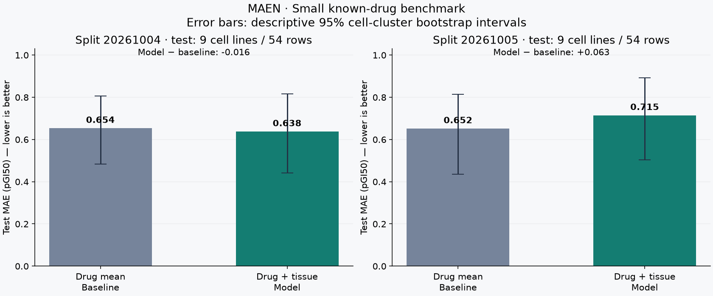
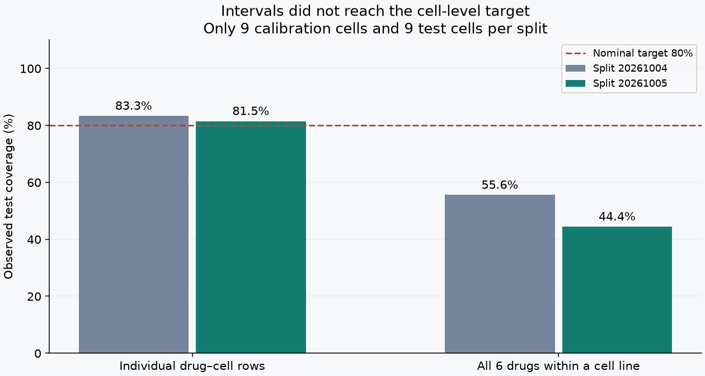

計算して、基準と比べる。
1つの分割では少し改善。
別の分割では悪化。安定した改善は確認できません。
既知抗がん剤の細胞株応答を予測する、小さなCPU計算の記録です。新薬の発見や治療効果を示すものではありません。
基準から、何が変わった？
薬剤ごとの学習平均を基準に、組織分類による補正を加えたモデルを比較しました。平均絶対誤差（MAE）は小さい方が良い値です。

| 分割seed | 基準MAE | モデルMAE | 差 | 基準 / モデルRMSE |
|---|---|---|---|---|
| 20261004 / 再現 | 0.654 | 0.638 | −0.016 | 0.829 / 0.825 |
| 20261005 / 感度 | 0.652 | 0.715 | +0.063 | 0.866 / 0.906 |
2つ目は同じデータの分割を変えた感度確認です。独立した新データの検証ではなく、候補数や学習量も増やしていません。良い分割だけを選ばず、悪化した結果も残します。
不確実性は十分だったか

細胞株全体での被覆率は目標未達です。行単位の被覆率だけから信頼できると判断できません。測定誤差や臨床上の安全性を表す区間でもありません。
方法とデータの範囲
NCI/DTPの既知薬剤6種（doxorubicin、cisplatin、paclitaxel、fluorouracil、methotrexate、etoposide）のGI50集約値を使用。pGI50 = −log10(GI50 [M]) に変換します。
学習37株/222行、校正9株/54行、test9株/54行。同じ細胞株の全薬剤を同じ分割に入れ、行ランダム分割は使いません。組織で層化した固定分割で、モデルと縮小係数10は変更せず、seedだけを比較しました。未知化合物への一般化は測っていません。
薬剤ごとに実験数が最大の集約条件を採用し、6薬剤に共通する株を使用。3株未満の前立腺群2株は除外しました。各薬剤の最高濃度は異なり、集約前の実験日やプレート単位の独立性は復元できません。
保存済みの約1.16MBデータを再利用し、追加ダウンロードはありません。1スレッド・低優先度で各計算1秒未満。取得上限12MB、計算上限60秒、常駐処理なし。
出典：NCI/DCTD Data / Compound Inhibition Bulk Data Download。NCI再利用方針は一般テキストの方針で、データ固有の再配布権を確認したとは扱いません。生データ・細胞株別応答や予測表は掲載せず、集計指標・方法・出典とchecksumを載せています。
記録と再現手順
集計JSON：指標・サンプル数・実測秒・出典・SHA256 / 比較グラフSVG / 被覆率SVG / 詳細Markdown


実験コードcommit cd1040556093c032e768548510d3daecba3e2bd3。同じchecksumのキャッシュを保ったMAEN作業コピーで実行します。本体コードは非公開で、公開閲覧者に完全な実行環境が提供されているとは主張しません。
nice -n 15 python3 maen.py run --seed 20261004 --out runs/check nice -n 15 python3 maen.py run --seed 20261005 --out runs/sensitivity
未知化合物、原実験/プレート別分離、打ち切り補正、他施設での評価、生体内・臨床効果は未検証です。
更新履歴
2026-10-04：小規模ベンチマーク初版。
2026-10-05：同じ分割の再現と追加1分割の感度確認、結果グラフを追加。